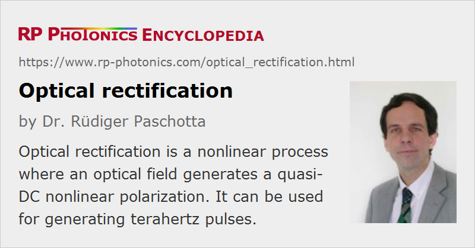

Optical Rectification
Acronym: OR
Definition: a nonlinear process where an optical field generates a quasi-DC nonlinear polarization
More general term: nonlinear optical effects
German: optische Gleichrichtung
How to cite the article; suggest additional literature
Author: Dr. Rüdiger Paschotta
When light propagates through a material with a χ(2) nonlinearity, the resulting nonlinear polarization has a quasi-DC component, i.e., it has a non-zero average value. This is because the optical nonlinearity can not only generate frequency components of the nonlinear polarization related to the sums and differences of the involved optical frequencies (→ sum and difference frequency generation), but also a component the frequency of which is the difference of some optical frequency with itself, i.e., zero frequency.
For light beams with approximately constant or slowly varying optical power, the occurring quasi-DC (low-frequency) nonlinear polarization usually has no noticeable effect. In case of ultrashort pulses, however, the strength of the quasi-DC component rises and falls off rapidly, and that leads to the radiation of an electromagnetic single-cycle pulse with a wide frequency spectrum, ranging roughly from zero frequency to some maximum value, where the overall bandwidth in the phase-matched case is essentially determined by the inverse of the pulse duration. For an optical pulse with a duration of 100 femtoseconds, for example, the resulting radiation pulse has frequency components going beyond 10 THz (→ terahertz radiation) and can also be considered as far-infrared radiation.
It can be shown that the nonlinear tensor responsible for optical rectification is directly related to the electro-optic tensor of the material. Therefore, in the literature one often specifies the effective electro-optic coefficient of a material (in units of pm/V) instead of the corresponding χ(2) component, which has the same units but a different magnitude. (The conversion factor involves refractive indices.)
Various aspects of optical rectification differ from those of other nonlinear conversion processes such as frequency doubling:
- Due to the low frequency of the generated radiation, the radiation for a given strength of the nonlinear polarization is very weak. The achieved conversion efficiencies are often very low – in the best cases, a couple of percent.
- The generated terahertz bandwidth is typically comparable with the pump pulse bandwidth, but that bandwidth is very large compared with the mean terahertz frequency. That implies, for example, that the radiation efficiency and the strength of diffraction effects vary strongly within the pulse spectrum.
- The used crystals often exhibit substantial absorption in the terahertz regime, whereas parasitic absorption in the optical domain is often very weak.
- In some cases, the refractive index for the terahertz waves is far larger than that for the optical beam, which strongly limits the choice of phase-matching schemes.
Materials and Phase Matching Schemes
Very different materials can be used for terahertz wave generation with optical rectification:
- Traditional inorganic nonlinear crystal materials like lithium niobate (LiNbO3) and lithium tantalate (LiTaO3) are widely used. They are relatively robust and readily available in large sizes.
- In some cases, organic crystals like DAST = 4-dimethylamino-N-methylstilbazolium tosylate, OH1 = 2-(3-(4-hydroxystyryl)-5,5-dimethylcyclohex-2-enylidene)malononitrile and DSTMS = 4-N,N-dimethylamino-4'-N'-methyl-stilbazolium 2,4,6-trimethylbenzenesulfonate are used [8], which typically exhibit a very strong nonlinearity (with electro-optic coefficients >100 pm/V, two orders of magnitude higher than for typical inorganic crystals). This allows the efficient terahertz conversion even for moderate optical fluences.
- Some organic materials can also be used in polymeric (rather than monocrystalline) form; the required χ(2) can be generated by electric field poling [5].
- Various semiconductors are also suitable, e.g. gallium arsenide (GaAs), gallium phosphide (GaP), cadmium telluride (CdTe) and zinc telluride (ZnTe). The used nonlinear interaction is not necessarily based on a χ(2) bulk nonlinearity, but can also result from the combination of a static surface depletion field and the material's χ(3) nonlinearity, particularly for high pulse fluence.
In any case, substantial power conversion efficiencies are possible only if phase matching of the nonlinear interaction is achieved, or if at least the phase mismatch within the crystal length is not too large. There are different phase-matching schemes which can be applied in different crystal materials. For example, simple collinear phase matching can be achieved for optical pulses in the 1-μm spectral region in gallium phosphide (GaP). Other crystal materials allow phase matching for other optical wavelengths, for example gallium arsenide for 1.3 μm; the phase-matching bandwidth is quite large, so that even operation in the 1.5-μm region is possible with reasonable crystal lengths.
In other materials like lithium niobate (LiNbO3), the refractive index for the terahertz waves is much too large for collinear phase matching; here, one can employ a Cherenkov phase matching scheme, where the generated radiation is coupled out on the side (e.g. with silicon prisms attached to the side of the nonlinear crystal in order to suppress total internal reflection at the crystal–air boundary).
In some cases, angular dispersion (i.e., tilted pulse fronts) is used [10, 16, 27], achieving relatively high conversion efficiencies in the regime of high pulse energies. In other cases, quasi-phase matching in periodically poled crystals is employed [17]; even backward-emission, leading to narrowband THz emission, is possible without requiring excessively small poling periods [7, 23], since the wavenumber of the terahertz radiation is small.
Terahertz generation by optical rectification of femtosecond pulses is possible even in gases like air, when a plasma is generated by the superposition of an infrared beam with its second harmonic [20]. Careful phase control of the involved waves is necessary for a high conversion efficiency. Compared with optical rectification in crystals, the emission bandwidth is typically higher, and higher pulse energies can be obtained.
Dependencies of the Terahertz Pulse Parameters
For a given pulse duration and temporal shape, the radiated terahertz energy is proportional to the square of the optical pulse energy and to the square of the effective nonlinear coefficient deff. This implies that the power conversion efficiency is proportional to the pulse energy. (In cases with substantial two-photon absorption or other saturation effects, this law does not hold.)
For a given pulse energy, the energy of the generated terahertz pulse is proportional to the fifth power of the inverse pulse duration (at least in simple cases). This can be understood as follows:
- The radiated amplitude is related to the charge acceleration, i.e., to the second time derivative of the polarization, and the radiated intensity is proportional to the square of the amplitude. Therefore, the power radiated by a sinusoidally oscillating dipole is proportional to the fourth power of the oscillation frequency, if a certain oscillation amplitude is given.
- The energy radiated per oscillation cycle is therefore proportional to the inverse third power of the pulse duration, if the peak polarization is constant. The same holds for the radiation caused by optical rectification with a single pulse, which can be considered to cause a single oscillation cycle of the nonlinear polarization.
- The radiated energy is also proportional to the square of the oscillation amplitude of the nonlinear polarization, which itself is proportional to the square of the electric field strength, thus to the optical peak power, and therefore inversely proportional to the pulse duration for a given pulse energy.
In conclusion, the radiated terahertz energy increases very strongly when the pulse duration is reduced while the pulse energy is kept constant – and this is only partly due to the then higher peak optical intensity. As mentioned above, shorter pulses also imply a larger bandwidth of the terahertz pulse. Figure 3 shows the terahertz spectra for the two cases.
The influence of the pulse duration is also illustrated in the following figures, using a very simplified model, which ignores details like imperfect phase matching, frequency-dependent diffraction and absorption. Although the peak power is the same in both cases, the generated terahertz electric field is much stronger for the shorter pulse, because the second time derivative of the nonlinear polarization is much stronger.

A longer length of the used nonlinear crystal can in simple cases increase the obtained terahertz pulse energy in proportion to the square of the crystal length – similar to the case of frequency doubling, for example. However, various detrimental effects can reduce the beneficial effects of an increase crystal length, even if perfect phase matching is achieved. In particular, there are strong diffraction effects due to the long wavelengths of the terahertz radiation (typically of the order of hundreds of micrometers): even if the laser beam can have an approximately constant beam radius throughout the crystal, the terahertz radiation generated in the beginning can transversely expand before reaching the crystal end, and that does not only cause a larger output beam, but also degrades the conversion efficiency (similar to spatial walk-off in other nonlinear interactions). Also, there can be substantial absorption for the terahertz radiation in the crystal material. This is particularly the case when the involved frequencies reach phonon frequencies of the material.
Due to the already mentioned diffraction effects, tighter focusing of the laser beam is also helpful only to some limited extent. High laser pulse energies allow one to use only mild focusing of the laser beam (while maintaining high intensities), so that diffraction effects are weak.
Detailed calculations of the nonlinear conversion process usually require a sophisticated numerical model, describing both the spatial and temporal dependencies. Such a model can take into account various effects:
- Free-carrier absorption of THz radiation and phonon resonances of the crystal material can reduce the obtained output power. (In some cases, strong absorption lines are seen in the generated spectra.)
- Wavelength-dependent diffraction of the terahertz wave generally needs to be taken into account, possibly also diffraction of the optical pump beam.
- Pump depletion effects can occur in case of substantial power conversion. In addition, two-photon absorption may attenuate the pump wave at high intensity levels.
- Group velocity dispersion can be relevant, possibly also angular dispersion and the group velocity mismatch.
- In some materials like LiNbO3, a polariton resonance can enhance the effective nonlinearity [24].
Questions and Comments from Users
Here you can submit questions and comments. As far as they get accepted by the author, they will appear above this paragraph together with the author’s answer. The author will decide on acceptance based on certain criteria. Essentially, the issue must be of sufficiently broad interest.
Please do not enter personal data here; we would otherwise delete it soon. (See also our privacy declaration.) If you wish to receive personal feedback or consultancy from the author, please contact him e.g. via e-mail.
By submitting the information, you give your consent to the potential publication of your inputs on our website according to our rules. (If you later retract your consent, we will delete those inputs.) As your inputs are first reviewed by the author, they may be published with some delay.
Bibliography
| [1] | M. Bass et al., “Optical rectification”, Phys. Rev. Lett. 9 (11), 446 (1962), doi:10.1103/PhysRevLett.9.446 |
| [2] | K. H. Yang, P. L. Richards and Y. R. Shen, “Generation of far-infrared radiation by picosecond light pulses in LiNbO3”, Appl. Phys. Lett. 19 (9), 320 (1971), doi:10.1063/1.1653935 |
| [3] | D. H. Auston et al., “Cherenkov radiation from femtosecond optical pulses in electro-optic Media”, Phys. Rev. Lett. 53 (16), 1555 (1984), doi:10.1103/PhysRevLett.53.1555 |
| [4] | J. B. Khurgin, “Optical rectification and terahertz emission in semiconductors excited above the band gap”, J. Opt. Soc. Am. B 11 (12), 2492 (1994), doi:10.1364/JOSAB.11.002492 |
| [5] | A. Nahata et al., “Generation of terahertz radiation from a poled polymer”, Appl. Phys. Lett. 67 (10), 1358 (1995), doi:10.1063/1.115550 |
| [6] | A. Nashata and T. F. Heinz, “Generation of subpicosecond electrical pulses by optical rectification”, Opt. Lett. 23 (11), 867 (1998), doi:10.1364/OL.23.000867 |
| [7] | Y. J. Ding and J. B. Khurgin, “A new scheme for efficient generation of coherent and incoherent submillimeter to THz waves in periodically-poled lithium niobate”, Opt. Commun. 148, 105 (1998), doi:10.1016/S0030-4018(97)00611-1 |
| [8] | P. Y. Han et al., “Use of the organic crystal DAST for terahertz beam applications”, Opt. Lett. 25 (9), 675 (2000), doi:10.1364/OL.25.000675 |
| [9] | R. Spreiter, C. Bosshard and P. Günter, “Boundary conditions for optical rectification and application to degenerate four-wave mixing in a novel geometry”, J. Opt. Soc. Am. B 18 (9), 1311 (2001), doi:10.1364/JOSAB.18.001311 |
| [10] | J. Hebling et al., “Velocity matching by pulse front tilting for large area THz pulse generation”, Opt. Express 10 (21), 1161 (2002), doi:10.1364/OE.10.001161 |
| [11] | T. Taniuch and H. Nakanishi, “Collinear phase-matched terahertz-wave generation in GaP crystal using a dual-wavelength optical parametric oscillator”, J. Appl. Phys. 95 (12), 7588 (2004), doi:10.1063/1.1751238 |
| [12] | Y. J. Ding, “Quasi-single-cycle THz pulses based on broadband phase-matched difference-frequency generation in second-order nonlinear medium: high output powers and conversion efficiencies”, J. Sel. Top. Quantum Electron. 10, 1171 (2004), doi:10.1109/CLEO.2005.202156 |
| [13] | I. Tomita et al., “Terahertz-wave generation from quasi-phase-matched GaP for 1.55 μm pumping”, Appl. Phys. Lett. 88 (7), 071118 (2006), doi:10.1063/1.2174832 |
| [14] | A. Schneider et al., “Generation of terahertz pulses through optical rectification in organic DAST crystals: theory and experiment”, J. Opt. Soc. Am. B 23 (9), 1822 (2006), doi:10.1364/JOSAB.23.001822 |
| [15] | G. Chang et al., “Power scalable compact THz system based on an ultrafast Yb-doped fiber amplifier”, Opt. Express 14 (17), 7909 (2006), doi:10.1364/OE.14.007909 |
| [16] | K. L. Yeh et al., “Generation of 10 μJ ultrashort terahertz pulses by optical rectification”, Appl. Phys. Lett. 90 (17), 171121 (2007), doi:10.1063/1.2734374 |
| [17] | K. L. Vodopyanov, “Optical THz-wave generation with periodically-inverted GaAs”, Laser & Photonics Reviews 2 (1-2), 11 (2008), doi:10.1002/lpor.200710028 |
| [18] | A. G. Stepanov et al., “Generation of 30 μJ single-cycle terahertz pulses at 100 Hz repetition rate by optical rectification”, Opt. Lett. 33 (21), 2497 (2008), doi:10.1364/OL.33.002497 |
| [19] | S. Xu et al., “Broadband terahertz generation through intracavity nonlinear optical rectification”, Opt. Express 18 (22), 22625 (2010), doi:10.1364/OE.18.022625 |
| [20] | J. Dai et a l., “Terahertz wave air photonics: terahertz wave generation and detection with laser-induced gas plasma”, IEEE J. Sel. Top. Quantum. Electron. 17 (1), 183 (2011), doi:10.1109/JSTQE.2010.2047007 |
| [21] | H. Hirori et al., “Single-cycle terahertz pulses with amplitudes exceeding 1 MV/cm generated by optical rectification in LiNbO3”, Appl. Phys. Lett. 98 (9), 091106 (2011), doi:10.1063/1.3560062 |
| [22] | J. A. Fülöp et al., “Towards generation of mJ-level ultrashort THz pulses by optical rectification”, Opt. Express 19 (16), 15090 (2011), doi:10.1364/OE.19.015090 |
| [23] | R. Chen et al., “Generation of high-frequency terahertz waves in periodically poled LiNbO3 based on backward parametric interaction”, Appl. Phys. Lett. 101, 111101 (2012), doi:10.1063/1.4751843 |
| [24] | X. Lin, L. Wang, and Y. J. Ding, “Efficient generation of far-infrared radiation in the vicinity of polariton resonance of lithium niobate”, Opt. Lett. 37 (17), 3687 (2012), doi:10.1364/OL.37.003687 |
| [25] | V. Vicario et al., “Generation of 0.9-mJ THz pulses in DSTMS pumped by a Cr:Mg2SiO4 laser”, Opt. Lett. 39 (23), 6632 (2014), doi:10.1364/OL.39.006632 |
| [26] | W. Schneider et al., “800-fs, 330-μJ pulses from a 100-W regenerative Yb:YAG thin-disk amplifier at 300 kHz and THz generation in LiNbO3”, Opt. Lett. 39 (23), 6604 (2014), doi:10.1364/OL.39.006604 |
| [27] | K. Ravi et al., “Theory of terahertz generation by optical rectification using tilted-pulse-fronts”, Opt. Express 23 (4), 5253 (2015), doi:10.1364/OE.23.005253 |
| [28] | S. Carbajo et al., “Efficient narrowband terahertz generation in cryogenically cooled periodically poled lithium niobate”, Opt. Lett. 40 (24), 5762 (2015), doi:10.1364/OL.40.005762 |
| [29] | F. Meyer et al., “Optical rectification of a 100-W average power mode-locked thin-disk oscillator”, Opt. Lett. 43 (24), 5909 (2018), doi:10.1364/OL.43.005909 |
| [30] | I. Wilke and S. Sengupta, “Nonlinear Optical Techniques for Terahertz Pulse Generation and Detection – Optical Rectification and Electrooptic Sampling”, chapter 2 in Terahertz Spectroscopy: Principles and Applications, edited by S. L. Dexheimer, Optical Science and Engineering Vol. 131, 41, CRC Press (2007) |
See also: terahertz radiation, terahertz sources, nonlinear frequency conversion, nonlinearities, sum and difference frequency generation, electro-optic sampling
and other articles in the category nonlinear optics
|  |
If you like this page, please share the link with your friends and colleagues, e.g. via social media:
These sharing buttons are implemented in a privacy-friendly way!